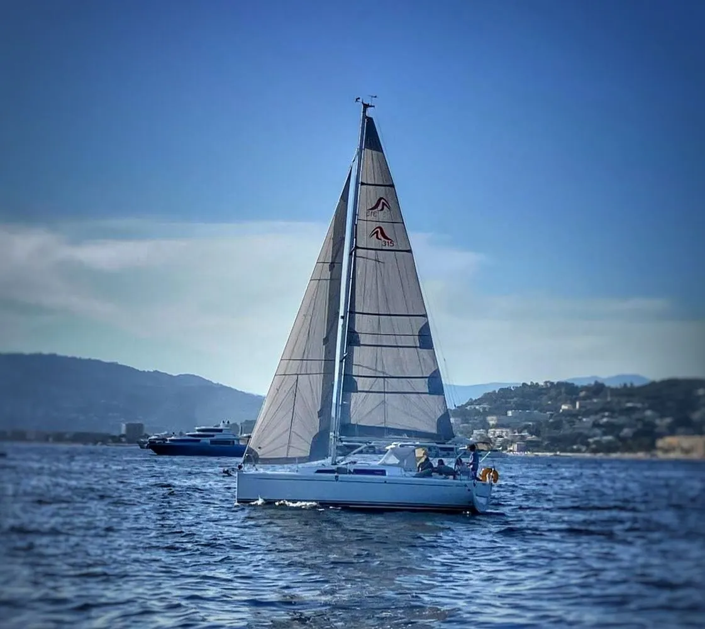
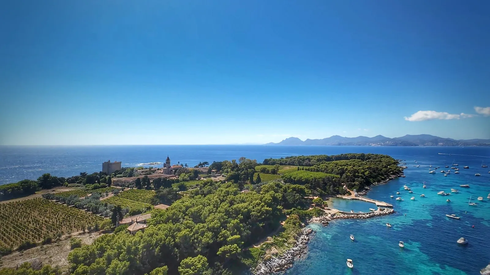
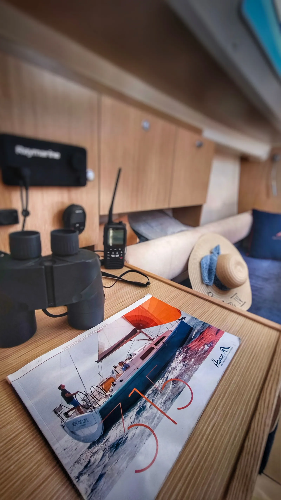
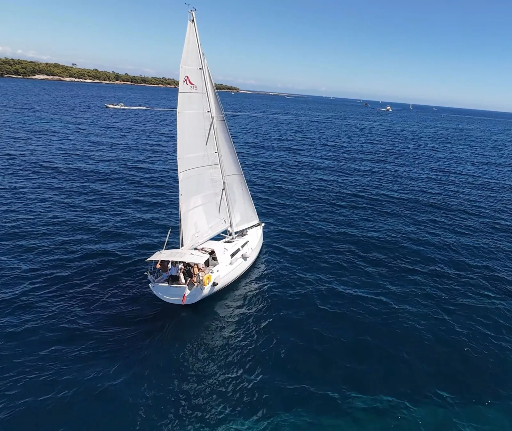
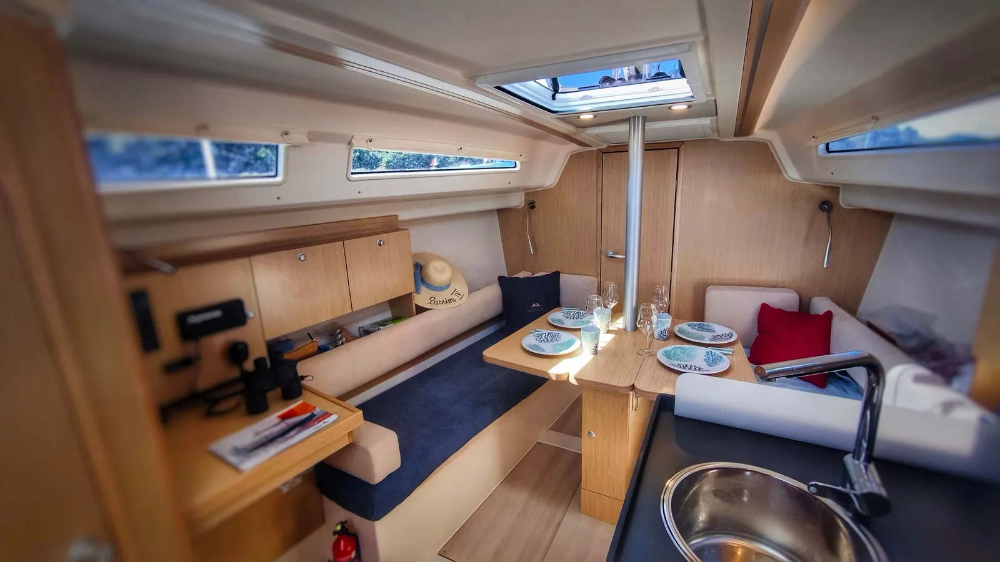

Cannes · Port Canto · Îles de Lérins
PASSION IV
Un voilier à taille humaine pour naviguer, apprendre et partager au départ de Cannes.
Les sorties et disponibilités se confirment directement avec Chantal, simplement, sans réservation en ligne.
L’esprit PASSION IV
Prendre le large, sans compliquer les choses.
PASSION IV est un Hanse 315 basé à Port Canto, à Cannes. L’idée est simple : partager des navigations conviviales, faire découvrir le bateau, progresser ensemble et profiter de la Méditerranée.
Tu trouveras ici l’essentiel : le voilier, l’ambiance à bord, quelques repères pour débuter et le moyen le plus simple de contacter Chantal.
L’expérience
Depuis Cannes, cap sur la baie et les Lérins.
Au bout de la Croisette, Port Canto est le point de départ. On largue les amarres, la baie s’ouvre, puis viennent la côte, les îles, les eaux claires et les moments de pause au mouillage.
- Départ de Port Canto, à Cannes
- Navigations adaptées à la météo et au niveau de l’équipage
- Ambiance conviviale, découverte et progression
- Contact direct avec Chantal pour organiser la sortie


Chantal
Une passion de la voile, et l’envie de la transmettre.
Passionnée depuis l’enfance, Chantal navigue sur différents supports depuis de nombreuses années. Avec PASSION IV, elle souhaite accueillir, partager son expérience et aider chacun à trouver sa place à bord.
Débutants, curieux et équipiers plus habitués peuvent se retrouver autour de la même envie : comprendre un peu mieux la voile et vivre une belle sortie en mer.
Le voilier
PASSION IV, Hanse 315
Un voilier à taille humaine, agréable pour découvrir la navigation et partager du temps à bord.
Repère : les caractéristiques présentent le modèle et les éléments communiqués pour PASSION IV. La configuration exacte se confirme à bord.
Documentation Hanse 315 ↗Galerie
PASSION IV en images
Une sélection recentrée sur l’extérieur, l’intérieur, l’ambiance et les Lérins.


Débuter à bord
Quelques repères avant une première sortie
Pas besoin de tout savoir. Quelques mots et quelques habitudes suffisent pour commencer.
Se repérer
- Proue : l’avant ; poupe : l’arrière.
- Bâbord : gauche ; tribord : droite, face à l’avant.
- Le cockpit est l’espace extérieur de vie et de manœuvre.
Comprendre le vent
- Un voilier ne va pas directement face au vent.
- Plus on s’éloigne de son axe, plus on ouvre les voiles.
- Le programme dépend toujours de la météo.
Participer en sécurité
- Écouter d’abord, agir ensuite.
- Ne jamais mettre mains ou pieds entre bateau et quai.
- En cas de doute, on demande.
Infos pratiques
Avant de venir
Le rendez-vous et le programme exact se confirment directement avec Chantal.
Départ
PASSION IV est basé à Port Canto, Cannes. Le point précis est communiqué avant la sortie.
Tenue
Chaussures qui accrochent, vêtements confortables, protection contre le vent et le soleil.
À emporter
Un petit sac souple, de l’eau et l’essentiel pour la journée.
Organisation
Les dates et disponibilités sont communiquées directement par Chantal, notamment via WhatsApp.
Contact
Le plus simple : un message direct.
Pour connaître les prochaines sorties ou poser une question, contacte directement Chantal.
Les sorties se préparent directement avec elle, sans réservation ni paiement sur le site.